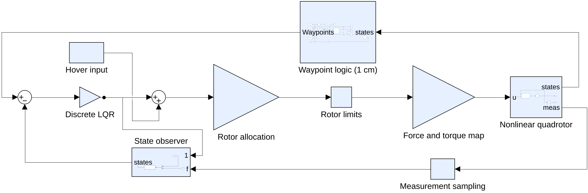
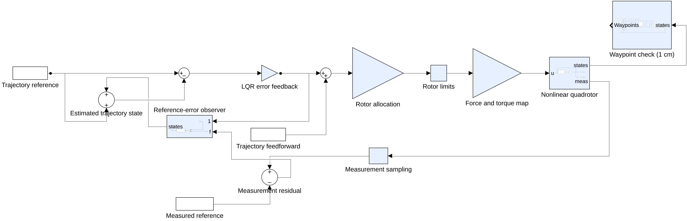
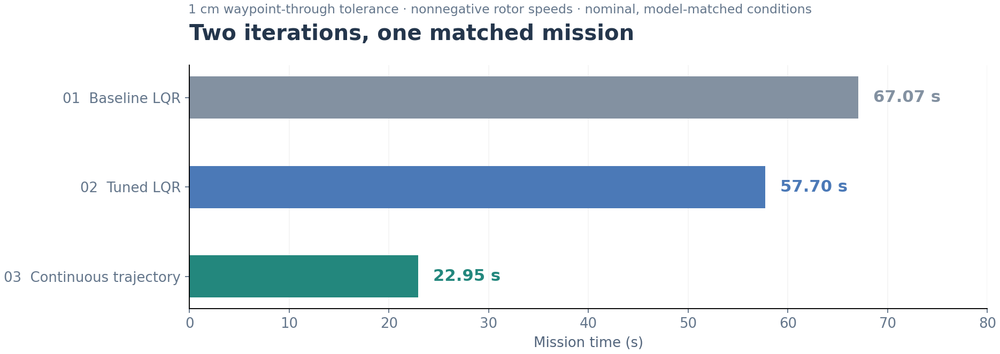
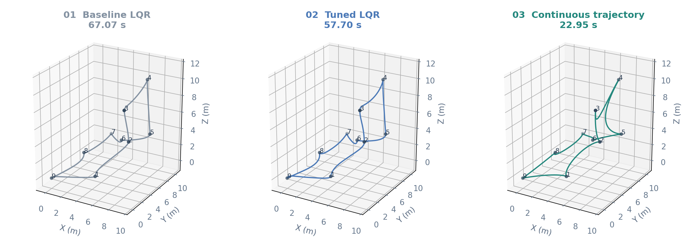
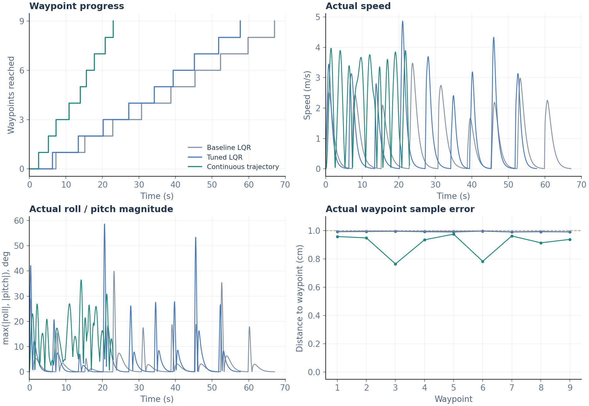

Waypoint / trajectory
Hover targets in stages 1–2.
Time-varying state and input references in stage 3.
From hover regulation to continuous flight
A feedback control system for a nonlinear, 12-state quadrotor. This case study follows the original waypoint controller through two further iterations: tuning the LQR response, then replacing hover targets with a continuous flight trajectory.
Three stages of the same simulated waypoint task. Each iteration changes a different part of the control workflow.
01 / The problem
How can a quadrotor visit eight 3D waypoints and return to the origin quickly, while staying within actuator limits and meeting a precise waypoint criterion?
The original course project connected hover linearization, LQR feedback, a state observer and a nonlinear Simulink plant. The follow-up study asks where time is lost: in the feedback tuning, or in the repeated approach to a stationary target.
The three-stage comparison uses the same waypoint order, a 1 cm waypoint-through tolerance, and nonnegative squared rotor-speed limits. The original presentation’s 66.52 s run is retained as historical context, under its original settings.
02 / Closing the loop
Hover targets in stages 1–2.
Time-varying state and input references in stage 3.
Six measured outputs inform a 12-state estimate. Feedback corrects state error.
Allocate thrust and torques to four rotors; integrate nonlinear rigid-body dynamics.

03 / From regulation to tracking
Double the position-error weights and halve the velocity-error weights. Recompute the discrete LQR gain while retaining the original observer matrices, input weights and waypoint sequence.
Each waypoint still specifies zero desired velocity and zero attitude. The controller reaches points sooner, but still tends to slow down as it approaches each stationary reference.
Fit a piecewise seventh-degree minimum-snap trajectory through the same waypoints. Intermediate pass-through speed is set to 0.05 m/s to leave a wider detection window; position, velocity, acceleration and jerk are continuous. The planned start and end velocities are zero.
Generate nominal attitude, thrust and torque from the nonlinear model. Retain the tuned LQR gain; apply the original observer gains to deviations from this moving reference. This is a trajectory-planning and tracking change, beyond weight tuning alone.

04 / Same mission, matched conditions
All three runs use the final course model’s 1 cm waypoint-through tolerance, actual-position waypoint detection, and squared rotor-speed bounds of [0, 250000]. The nonlinear plant, physical parameters, route and configured model step are shared.
Zero-velocity waypoint references
14.0% less time than baseline
60.2% less time than stage 2



| Metric | Baseline | Tuned LQR | Trajectory |
|---|---|---|---|
| Completion time | 67.07 s | 57.70 s | 22.95 s |
| Waypoints reached | 9 / 9 | 9 / 9 | 9 / 9 |
| Max actual waypoint error | 0.9971 cm | 0.9973 cm | 0.9759 cm |
| Max |roll| or |pitch| | 39.9° | 58.6° | 36.5° |
| Peak speed | 3.48 m/s | 4.87 m/s | 3.97 m/s |
The submitted run already used a 1 cm tolerance, giving 66.52 s, but allowed negative squared rotor speeds. Correcting the lower bound to zero gives 67.07 s; LQR tuning with the original estimated-position detector gave 57.69 s. For the main three-stage comparison, all runs now use an actual-position detector at the same 1 cm tolerance. The tuned run is 57.70 s; the 0.01 s difference is due to this detector input, not a precision change.
05 / Engineering iteration
The team corrected the mismatch between a 12-state model and six measured outputs with a 6 × 12 output selector for position and attitude, then rebuilt the measured-output design.
Repeated Y-position deviation led the team to isolate variables and identify an entry placed incorrectly in the linearized A matrix.
The follow-up study corrected the squared rotor-speed lower bound, standardized the waypoint-through tolerance at 1 cm, and accounted for the 10 ms delay between error sampling and waypoint-count updates.
06 / What the evidence supports
The simulations are deterministic, with no wind, sensor noise or motor lag. Stage 3 has exact nominal model knowledge and millisecond reference data. The selected trajectory was developed in a separate timing-sensitivity study and is re-run here under the final 1 cm criterion. This comparison does not establish a time-optimal solution.
Completion requires entering the final position tolerance; it does not impose a common terminal-speed threshold. The trajectory is planned to end at rest, but the position gate may stop the run slightly before that planned endpoint.
A waypoint-through tolerance means entering a target region; it does not mean maintaining 1 cm error along the entire flight or hovering within 1 cm. Next steps are model-mismatch, timing-offset and disturbance tests under the final 1 cm setup, and explicit final-speed and flight-envelope constraints. There is no hardware-flight validation in this study.